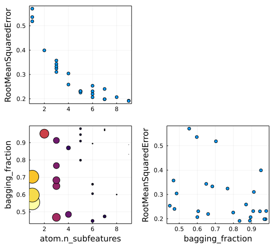
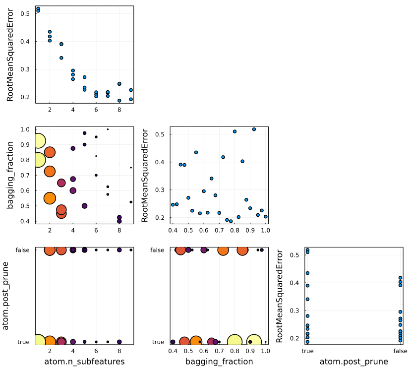

Tuning Models
MLJ provides several built-in and third-party options for optimizing a model's hyper-parameters. The quick-reference table below omits some advanced keyword options.
| tuning strategy | notes | package to import | package providing the core algorithm |
|---|---|---|---|
Grid(goal=nothing, resolution=10) | shuffled by default; goal is upper bound for number of grid points | MLJ.jl or MLJTuning.jl | MLJTuning.jl |
RandomSearch(rng=GLOBAL_RNG) | with customizable priors | MLJ.jl or MLJTuning.jl | MLJTuning.jl |
LatinHypercube(rng=GLOBAL_RNG) | with discrete parameter support | MLJ.jl or MLJTuning.jl | LatinHypercubeSampling |
MLJTreeParzenTuning() | See this example for usage | TreeParzen.jl | TreeParzen.jl (port to Julia of hyperopt) |
ParticleSwarm(n_particles=3, rng=GLOBAL_RNG) | Standard Kennedy-Eberhart algorithm, plus discrete parameter support | MLJParticleSwarmOptimization.jl | MLJParticleSwarmOptimization.jl |
AdaptiveParticleSwarm(n_particles=3, rng=GLOBAL_RNG) | Zhan et al. variant with automated swarm coefficient updates, plus discrete parameter support | MLJParticleSwarmOptimization.jl | MLJParticleSwarmOptimization.jl |
Explicit() | For an explicit list of models of varying type | MLJ.jl or MLJTuning.jl | MLJTuning.jl |
Below we illustrate hyperparameter optimization using the Grid, RandomSearch, LatinHypercube and Explicit tuning strategies.
Overview
In MLJ model tuning is implemented as a model wrapper. After wrapping a model in a tuning strategy and binding the wrapped model to data in a machine called mach, calling fit!(mach) instigates a search for optimal model hyperparameters, within a specified range, and then uses all supplied data to train the best model. To predict using that model, one then calls predict(mach, Xnew). In this way, the wrapped model may be viewed as a "self-tuning" version of the unwrapped model. That is, wrapping the model simply transforms certain hyper-parameters into learned parameters.
A corollary of the tuning-as-wrapper approach is that the evaluation of the performance of a TunedModel instance using evaluate! implies nested resampling. This approach is inspired by MLR. See also below.
In MLJ, tuning is an iterative procedure, with an iteration parameter n, the total number of model instances to be evaluated. Accordingly, tuning can be controlled using MLJ's IteratedModel wrapper. After familiarizing oneself with the TunedModel wrapper described below, see Controlling model tuning for more on this advanced feature.
For a more in-depth overview of tuning in MLJ, or for implementation details, see the MLJTuning documentation. For a complete list of options see the TunedModel doc-string below.
Tuning a single hyperparameter using a grid search (regression example)
using MLJ
X = MLJ.table(rand(100, 10));
y = 2X.x1 - X.x2 + 0.05*rand(100);
Tree = @load DecisionTreeRegressor pkg=DecisionTree verbosity=0;
tree = Tree()DecisionTreeRegressor( max_depth = -1, min_samples_leaf = 5, min_samples_split = 2, min_purity_increase = 0.0, n_subfeatures = 0, post_prune = false, merge_purity_threshold = 1.0, feature_importance = :impurity, rng = Random._GLOBAL_RNG())
Let's tune min_purity_increase in the model above, using a grid-search. To do so we will use the simplest range object, a one-dimensional range object constructed using the range method:
r = range(tree, :min_purity_increase, lower=0.001, upper=1.0, scale=:log);
self_tuning_tree = TunedModel(model=tree,
resampling=CV(nfolds=3),
tuning=Grid(resolution=10),
range=r,
measure=rms);DeterministicTunedModel(
model = DecisionTreeRegressor(
max_depth = -1,
min_samples_leaf = 5,
min_samples_split = 2,
min_purity_increase = 0.0,
n_subfeatures = 0,
post_prune = false,
merge_purity_threshold = 1.0,
feature_importance = :impurity,
rng = Random._GLOBAL_RNG()),
tuning = Grid(
goal = nothing,
resolution = 10,
shuffle = true,
rng = Random._GLOBAL_RNG()),
resampling = CV(
nfolds = 3,
shuffle = false,
rng = Random._GLOBAL_RNG()),
measure = RootMeanSquaredError(),
weights = nothing,
class_weights = nothing,
operation = nothing,
range = NumericRange(0.001 ≤ min_purity_increase ≤ 1.0; origin=0.5005, unit=0.4995; on log scale),
selection_heuristic = MLJTuning.NaiveSelection(nothing),
train_best = true,
repeats = 1,
n = nothing,
acceleration = CPU1{Nothing}(nothing),
acceleration_resampling = CPU1{Nothing}(nothing),
check_measure = true,
cache = true)Incidentally, a grid is generated internally "over the range" by calling the iterator method with an appropriate resolution:
iterator(r, 5)5-element Vector{Float64}:
0.0010000000000000002
0.005623413251903492
0.0316227766016838
0.1778279410038923
1.0Non-numeric hyperparameters are handled a little differently:
selector = FeatureSelector();
r2 = range(selector, :features, values = [[:x1,], [:x1, :x2]]);
iterator(r2)2-element Vector{Vector{Symbol}}:
[:x1]
[:x1, :x2]Unbounded ranges are also permitted. See the range and iterator docstrings below for details, and the sampler docstring for generating random samples from one-dimensional ranges (used internally by the RandomSearch strategy).
Returning to the wrapped tree model:
mach = machine(self_tuning_tree, X, y);
fit!(mach, verbosity=0)trained Machine; does not cache data
model: DeterministicTunedModel(model = DecisionTreeRegressor(max_depth = -1, …), …)
args:
1: Source @095 ⏎ Table{AbstractVector{Continuous}}
2: Source @687 ⏎ AbstractVector{Continuous}
We can inspect the detailed results of the grid search with report(mach) or just retrieve the optimal model, as here:
fitted_params(mach).best_modelDecisionTreeRegressor( max_depth = -1, min_samples_leaf = 5, min_samples_split = 2, min_purity_increase = 0.010000000000000004, n_subfeatures = 0, post_prune = false, merge_purity_threshold = 1.0, feature_importance = :impurity, rng = Random._GLOBAL_RNG())
For more detailed information, we can look at report(mach), for example:
entry = report(mach).best_history_entry(model = DecisionTreeRegressor(max_depth = -1, …), measure = [RootMeanSquaredError()], measurement = [0.26972775186169046], per_fold = [[0.22098922603087104, 0.35686244628875036, 0.20511493553656762]],)
Predicting on new input observations using the optimal model, trained on all the data bound to mach:
Xnew = MLJ.table(rand(3, 10));
predict(mach, Xnew)3-element Vector{Float64}:
1.792160485744994
0.8249751131366307
-0.28828185236240333Or predicting on some subset of the observations bound to mach:
test = 1:3
predict(mach, rows=test)3-element Vector{Float64}:
0.8249751131366307
-0.28828185236240333
0.24133412566816137For tuning using only a subset train of all observation indices, specify rows=train in the above fit! call. In that case, the above predict calls would be based on training the optimal model on all train rows.
A probabilistic classifier example
Tuning a classifier is not essentially different from tuning a regressor. A common gotcha however is to overlook the distinction between supervised models that make point predictions (subtypes of Deterministic) and those that make probabilistic predictions (subtypes of Probabilistic). The DecisionTreeRegressor model in the preceding illustration was deterministic, so this example will consider a probabilistic classifier:
info("KNNClassifier").prediction_type:probabilistic
X, y = @load_iris
KNN = @load KNNClassifier verbosity=0
knn = KNN()KNNClassifier( K = 5, algorithm = :kdtree, metric = Distances.Euclidean(0.0), leafsize = 10, reorder = true, weights = NearestNeighborModels.Uniform())
We'll tune the hyperparameter K in the model above, using a grid-search once more:
K_range = range(knn, :K, lower=5, upper=20);NumericRange(5 ≤ K ≤ 20; origin=12.5, unit=7.5)
Since the model is probabilistic, we can choose either: (i) a probabilistic measure, such as brier_loss; or (ii) use a deterministic measure, such as misclassification_rate (which means predict_mean is called instead of predict under the hood).
Case (i) - probabilistic measure:
self_tuning_knn = TunedModel(model=knn,
resampling = CV(nfolds=4, rng=1234),
tuning = Grid(resolution=5),
range = K_range,
measure=BrierLoss());
mach = machine(self_tuning_knn, X, y);
fit!(mach, verbosity=0);trained Machine; does not cache data
model: ProbabilisticTunedModel(model = KNNClassifier(K = 5, …), …)
args:
1: Source @924 ⏎ Table{AbstractVector{Continuous}}
2: Source @884 ⏎ AbstractVector{Multiclass{3}}
Case (ii) - deterministic measure:
self_tuning_knn = TunedModel(model=knn,
resampling = CV(nfolds=4, rng=1234),
tuning = Grid(resolution=5),
range = K_range,
measure=MisclassificationRate())
mach = machine(self_tuning_knn, X, y);
fit!(mach, verbosity=0);trained Machine; does not cache data
model: ProbabilisticTunedModel(model = KNNClassifier(K = 5, …), …)
args:
1: Source @410 ⏎ Table{AbstractVector{Continuous}}
2: Source @991 ⏎ AbstractVector{Multiclass{3}}
Let's inspect the best model and corresponding evaluation of the metric in case (ii):
entry = report(mach).best_history_entry(model = KNNClassifier(K = 5, …), measure = [MisclassificationRate()], measurement = [0.026849217638691324], per_fold = [[0.0, 0.02631578947368421, 0.0, 0.08108108108108109]],)
entry.model.K5
Recall that fitting mach also retrains the optimal model on all available data. The following is therefore an optimal model prediction based on all available data:
predict(mach, rows=148:150)3-element CategoricalDistributions.UnivariateFiniteVector{Multiclass{3}, String, UInt32, Float64}:
UnivariateFinite{Multiclass{3}}(setosa=>0.0, versicolor=>0.0, virginica=>1.0)
UnivariateFinite{Multiclass{3}}(setosa=>0.0, versicolor=>0.0, virginica=>1.0)
UnivariateFinite{Multiclass{3}}(setosa=>0.0, versicolor=>0.0, virginica=>1.0)Specifying a custom measure
Users may specify a custom loss or scoring function. Suppose, for example, we define a new scoring function custom_accuracy by
custom_accuracy(y,yhat) = mean(y .== yhat);custom_accuracy (generic function with 1 method)
In tuning, scores are maximised, while losses are minimised. By default, a custom measure is assumed to be a loss rather than a score, so we must also declare
MLJ.orientation(::typeof(custom_accuracy)) = :scoreFor full details on constructing custom measures, see Traits and custom measures.
self_tuning_knn = TunedModel(model=knn,
resampling = CV(nfolds=4),
tuning = Grid(resolution=5),
range = K_range,
measure = [custom_accuracy, MulticlassFScore()],
operation = predict_mode);
mach = machine(self_tuning_knn, X, y)
fit!(mach, verbosity=0)
entry = report(mach).best_history_entry(model = KNNClassifier(K = 5, …), measure = Any[Main.var"ex-goof".custom_accuracy, MulticlassFScore(β = 1.0, …)], measurement = [0.8856685633001422, 0.7428716167317991], per_fold = [[1.0, 0.9210526315789473, 0.918918918918919, 0.7027027027027027], [1.0, 0.6462585034013606, 0.9125295508274232, 0.4126984126984127]],)
entry.model.K5
Tuning multiple nested hyperparameters
The forest model below has another model, namely a DecisionTreeRegressor, as a hyperparameter:
tree = Tree() # defined above
forest = EnsembleModel(model=tree)DeterministicEnsembleModel(
model = DecisionTreeRegressor(
max_depth = -1,
min_samples_leaf = 5,
min_samples_split = 2,
min_purity_increase = 0.0,
n_subfeatures = 0,
post_prune = false,
merge_purity_threshold = 1.0,
feature_importance = :impurity,
rng = Random._GLOBAL_RNG()),
atomic_weights = Float64[],
bagging_fraction = 0.8,
rng = Random._GLOBAL_RNG(),
n = 100,
acceleration = CPU1{Nothing}(nothing),
out_of_bag_measure = Any[])Ranges for nested hyperparameters are specified using dot syntax. In this case, we will specify a goal for the total number of grid points:
r1 = range(forest, :(model.n_subfeatures), lower=1, upper=9);
r2 = range(forest, :bagging_fraction, lower=0.4, upper=1.0);
self_tuning_forest = TunedModel(model=forest,
tuning=Grid(goal=30),
resampling=CV(nfolds=6),
range=[r1, r2],
measure=rms);
X = MLJ.table(rand(100, 10));
y = 2X.x1 - X.x2 + 0.05*rand(100);
mach = machine(self_tuning_forest, X, y);
fit!(mach, verbosity=0);trained Machine; does not cache data
model: DeterministicTunedModel(model = DeterministicEnsembleModel(model = DecisionTreeRegressor(max_depth = -1, …), …), …)
args:
1: Source @561 ⏎ Table{AbstractVector{Continuous}}
2: Source @108 ⏎ AbstractVector{Continuous}
We can plot the grid search results:
using Plots
plot(mach)Instead of specifying a goal, we can declare a global resolution, which is overridden for a particular parameter by pairing its range with the resolution desired. In the next example, the default resolution=100 is applied to the r2 field, but a resolution of 3 is applied to the r1 field. Additionally, we ask that the grid points be randomly traversed and the total number of evaluations be limited to 25.
tuning = Grid(resolution=100, shuffle=true, rng=1234)
self_tuning_forest = TunedModel(model=forest,
tuning=tuning,
resampling=CV(nfolds=6),
range=[(r1, 3), r2],
measure=rms,
n=25);
fit!(machine(self_tuning_forest, X, y), verbosity=0);trained Machine; does not cache data
model: DeterministicTunedModel(model = DeterministicEnsembleModel(model = DecisionTreeRegressor(max_depth = -1, …), …), …)
args:
1: Source @741 ⏎ Table{AbstractVector{Continuous}}
2: Source @115 ⏎ AbstractVector{Continuous}
For more options for a grid search, see Grid below.
Tuning using a random search
Let's attempt to tune the same hyperparameters using a RandomSearch tuning strategy. By default, bounded numeric ranges like r1 and r2 are sampled uniformly (before rounding, in the case of the integer range r1). Positive unbounded ranges are sampled using a Gamma distribution by default, and all others using a (truncated) normal distribution.
self_tuning_forest = TunedModel(model=forest,
tuning=RandomSearch(),
resampling=CV(nfolds=6),
range=[r1, r2],
measure=rms,
n=25);
X = MLJ.table(rand(100, 10));
y = 2X.x1 - X.x2 + 0.05*rand(100);
mach = machine(self_tuning_forest, X, y);
fit!(mach, verbosity=0)trained Machine; does not cache data
model: DeterministicTunedModel(model = DeterministicEnsembleModel(model = DecisionTreeRegressor(max_depth = -1, …), …), …)
args:
1: Source @268 ⏎ Table{AbstractVector{Continuous}}
2: Source @624 ⏎ AbstractVector{Continuous}
using Plots
plot(mach)
The prior distributions used for sampling each hyperparameter can be customized, as can the global fallbacks. See the RandomSearch doc-string below for details.
Tuning using Latin hypercube sampling
One can also tune the hyperparameters using the LatinHypercube tuning strategy. This method uses a genetic-based optimization algorithm based on the inverse of the Audze-Eglais function, using the library LatinHypercubeSampling.jl.
We'll work with the data X, y and ranges r1 and r2 defined above and instantiate a Latin hypercube resampling strategy:
latin = LatinHypercube(gens=2, popsize=120)LatinHypercube( gens = 2, popsize = 120, ntour = 2, ptour = 0.8, interSampleWeight = 1.0, ae_power = 2, periodic_ae = false, rng = Random._GLOBAL_RNG())
Here gens is the number of generations to run the optimisation for and popsize is the population size in the genetic algorithm. For more on these and other LatinHypercube parameters refer to the LatinHypercubeSampling.jl documentation. Pay attention that gens and popsize are not to be confused with the iteration parameter n in the construction of a corresponding TunedModel instance, which specifies the total number of models to be evaluated, independent of the tuning strategy.
For this illustration we'll add a third, nominal, hyper-parameter:
r3 = range(forest, :(model.post_prune), values=[true, false]);
self_tuning_forest = TunedModel(model=forest,
tuning=latin,
resampling=CV(nfolds=6),
range=[r1, r2, r3],
measure=rms,
n=25);
mach = machine(self_tuning_forest, X, y);
fit!(mach, verbosity=0)trained Machine; does not cache data
model: DeterministicTunedModel(model = DeterministicEnsembleModel(model = DecisionTreeRegressor(max_depth = -1, …), …), …)
args:
1: Source @470 ⏎ Table{AbstractVector{Continuous}}
2: Source @247 ⏎ AbstractVector{Continuous}
using Plots
plot(mach)
Comparing models of different type and nested cross-validation
Instead of mutating hyperparameters of a fixed model, one can instead optimise over an explicit list of models, whose types are allowed to vary. As with other tuning strategies, evaluating the resulting TunedModel itself implies nested resampling (e.g., nested cross-validation) which we now examine in a bit more detail.
tree = (@load DecisionTreeClassifier pkg=DecisionTree verbosity=0)()
knn = (@load KNNClassifier pkg=NearestNeighborModels verbosity=0)()
models = [tree, knn]The following model is equivalent to the best in models by using 3-fold cross-validation:
multi_model = TunedModel(models=models,
resampling=CV(nfolds=3),
measure=log_loss,
check_measure=false)Note that there is no need to specify a tuning strategy or range but we do specify models (plural) instead of model. Evaluating multi_model implies nested cross-validation (each model gets evaluated 2 x 3 times):
X, y = make_blobs()
e = evaluate(multi_model, X, y,
resampling=CV(nfolds=2),
measure=log_loss,
verbosity=6)PerformanceEvaluation object with these fields:
measure, operation, measurement, per_fold,
per_observation, fitted_params_per_fold,
report_per_fold, train_test_rows
Extract:
┌────────────────────────────────┬───────────┬─────────────┬─────────┬──────────
│ measure │ operation │ measurement │ 1.96*SE │ per_fol ⋯
├────────────────────────────────┼───────────┼─────────────┼─────────┼──────────
│ LogLoss( │ predict │ 0.477 │ 1.02 │ [0.844, ⋯
│ tol = 2.220446049250313e-16) │ │ │ │ ⋯
└────────────────────────────────┴───────────┴─────────────┴─────────┴──────────
1 column omitted
Now, for example, we can get the best model for the first fold out of the two folds:
e.report_per_fold[1].best_modelKNNClassifier( K = 5, algorithm = :kdtree, metric = Distances.Euclidean(0.0), leafsize = 10, reorder = true, weights = NearestNeighborModels.Uniform())
And the losses in the outer loop (these still have to be matched to the best performing model):
e.per_fold1-element Vector{Vector{Float64}}:
[0.8439681182861232, 0.10948055729255236]It is also possible to get the results for the nested evaluations. For example, for the first fold of the outer loop and the second model:
e.report_per_fold[2].history[1](model = DecisionTreeClassifier(max_depth = -1, …),
measure = LogLoss{Float64}[LogLoss(tol = 2.220446049250313e-16)],
measurement = [4.328772098202795],
per_fold = [[2.1202149052421855, 6.360644715726557, 4.505456673639644]],)API
Base.range — Functionr = range(model, :hyper; values=nothing)Define a one-dimensional NominalRange object for a field hyper of model. Note that r is not directly iterable but iterator(r) is.
A nested hyperparameter is specified using dot notation. For example, :(atom.max_depth) specifies the max_depth hyperparameter of the submodel model.atom.
r = range(model, :hyper; upper=nothing, lower=nothing,
scale=nothing, values=nothing)Assuming values is not specified, define a one-dimensional NumericRange object for a Real field hyper of model. Note that r is not directly iteratable but iterator(r, n)is an iterator of length n. To generate random elements from r, instead apply rand methods to sampler(r). The supported scales are :linear,:log, :logminus, :log10, :log10minus, :log2, or a callable object.
Note that r is not directly iterable, but iterator(r, n) is, for given resolution (length) n.
By default, the behaviour of the constructed object depends on the type of the value of the hyperparameter :hyper at model at the time of construction. To override this behaviour (for instance if model is not available) specify a type in place of model so the behaviour is determined by the value of the specified type.
A nested hyperparameter is specified using dot notation (see above).
If scale is unspecified, it is set to :linear, :log, :log10minus, or :linear, according to whether the interval (lower, upper) is bounded, right-unbounded, left-unbounded, or doubly unbounded, respectively. Note upper=Inf and lower=-Inf are allowed.
If values is specified, the other keyword arguments are ignored and a NominalRange object is returned (see above).
MLJBase.iterator — Functioniterator([rng, ], r::NominalRange, [,n])
iterator([rng, ], r::NumericRange, n)Return an iterator (currently a vector) for a ParamRange object r. In the first case iteration is over all values stored in the range (or just the first n, if n is specified). In the second case, the iteration is over approximately n ordered values, generated as follows:
(i) First, exactly n values are generated between U and L, with a spacing determined by r.scale (uniform if scale=:linear) where U and L are given by the following table:
r.lower | r.upper | L | U |
|---|---|---|---|
| finite | finite | r.lower | r.upper |
-Inf | finite | r.upper - 2r.unit | r.upper |
| finite | Inf | r.lower | r.lower + 2r.unit |
-Inf | Inf | r.origin - r.unit | r.origin + r.unit |
(ii) If a callable f is provided as scale, then a uniform spacing is always applied in (i) but f is broadcast over the results. (Unlike ordinary scales, this alters the effective range of values generated, instead of just altering the spacing.)
(iii) If r is a discrete numeric range (r isa NumericRange{<:Integer}) then the values are additionally rounded, with any duplicate values removed. Otherwise all the values are used (and there are exacltly n of them).
(iv) Finally, if a random number generator rng is specified, then the values are returned in random order (sampling without replacement), and otherwise they are returned in numeric order, or in the order provided to the range constructor, in the case of a NominalRange.
Distributions.sampler — Functionsampler(r::NominalRange, probs::AbstractVector{<:Real})
sampler(r::NominalRange)
sampler(r::NumericRange{T}, d)Construct an object s which can be used to generate random samples from a ParamRange object r (a one-dimensional range) using one of the following calls:
rand(s) # for one sample
rand(s, n) # for n samples
rand(rng, s [, n]) # to specify an RNGThe argument probs can be any probability vector with the same length as r.values. The second sampler method above calls the first with a uniform probs vector.
The argument d can be either an arbitrary instance of UnivariateDistribution from the Distributions.jl package, or one of a Distributions.jl types for which fit(d, ::NumericRange) is defined. These include: Arcsine, Uniform, Biweight, Cosine, Epanechnikov, SymTriangularDist, Triweight, Normal, Gamma, InverseGaussian, Logistic, LogNormal, Cauchy, Gumbel, Laplace, and Poisson; but see the doc-string for Distributions.fit for an up-to-date list.
If d is an instance, then sampling is from a truncated form of the supplied distribution d, the truncation bounds being r.lower and r.upper (the attributes r.origin and r.unit attributes are ignored). For discrete numeric ranges (T <: Integer) the samples are rounded.
If d is a type then a suitably truncated distribution is automatically generated using Distributions.fit(d, r).
Important. Values are generated with no regard to r.scale, except in the special case r.scale is a callable object f. In that case, f is applied to all values generated by rand as described above (prior to rounding, in the case of discrete numeric ranges).
Examples
r = range(Char, :letter, values=collect("abc"))
s = sampler(r, [0.1, 0.2, 0.7])
samples = rand(s, 1000);
StatsBase.countmap(samples)
Dict{Char,Int64} with 3 entries:
'a' => 107
'b' => 205
'c' => 688
r = range(Int, :k, lower=2, upper=6) # numeric but discrete
s = sampler(r, Normal)
samples = rand(s, 1000);
UnicodePlots.histogram(samples)
┌ ┐
[2.0, 2.5) ┤▇▇▇▇▇▇▇▇▇▇▇▇▇▇ 119
[2.5, 3.0) ┤ 0
[3.0, 3.5) ┤▇▇▇▇▇▇▇▇▇▇▇▇▇▇▇▇▇▇▇▇▇▇▇▇▇▇▇▇▇▇▇▇▇▇▇ 296
[3.5, 4.0) ┤ 0
[4.0, 4.5) ┤▇▇▇▇▇▇▇▇▇▇▇▇▇▇▇▇▇▇▇▇▇▇▇▇▇▇▇▇▇▇▇▇▇ 275
[4.5, 5.0) ┤ 0
[5.0, 5.5) ┤▇▇▇▇▇▇▇▇▇▇▇▇▇▇▇▇▇▇▇▇▇▇▇▇▇▇ 221
[5.5, 6.0) ┤ 0
[6.0, 6.5) ┤▇▇▇▇▇▇▇▇▇▇▇ 89
└ ┘StatsAPI.fit — MethodDistributions.fit(D, r::MLJBase.NumericRange)Fit and return a distribution d of type D to the one-dimensional range r.
Only types D in the table below are supported.
The distribution d is constructed in two stages. First, a distributon d0, characterized by the conditions in the second column of the table, is fit to r. Then d0 is truncated between r.lower and r.upper to obtain d.
Distribution type D | Characterization of d0 |
|---|---|
Arcsine, Uniform, Biweight, Cosine, Epanechnikov, SymTriangularDist, Triweight | minimum(d) = r.lower, maximum(d) = r.upper |
Normal, Gamma, InverseGaussian, Logistic, LogNormal | mean(d) = r.origin, std(d) = r.unit |
Cauchy, Gumbel, Laplace, (Normal) | Dist.location(d) = r.origin, Dist.scale(d) = r.unit |
Poisson | Dist.mean(d) = r.unit |
Here Dist = Distributions.
MLJTuning.TunedModel — Functiontuned_model = TunedModel(; model=<model to be mutated>,
tuning=RandomSearch(),
resampling=Holdout(),
range=nothing,
measure=nothing,
n=default_n(tuning, range),
operation=nothing,
other_options...)Construct a model wrapper for hyper-parameter optimization of a supervised learner, specifying the tuning strategy and model whose hyper-parameters are to be mutated.
tuned_model = TunedModel(; models=<models to be compared>,
resampling=Holdout(),
measure=nothing,
n=length(models),
operation=nothing,
other_options...)Construct a wrapper for multiple models, for selection of an optimal one (equivalent to specifying tuning=Explicit() and range=models above). Elements of the iterator models need not have a common type, but they must all be Deterministic or all be Probabilistic and this is not checked but inferred from the first element generated.
See below for a complete list of options.
Training
Calling fit!(mach) on a machine mach=machine(tuned_model, X, y) or mach=machine(tuned_model, X, y, w) will:
Instigate a search, over clones of
model, with the hyperparameter mutations specified byrange, for a model optimizing the specifiedmeasure, using performance evaluations carried out using the specifiedtuningstrategy andresamplingstrategy. In the casemodelsis explictly listed, the search is instead over the models generated by the iteratormodels.Fit an internal machine, based on the optimal model
fitted_params(mach).best_model, wrapping the optimalmodelobject in all the provided dataX,y(,w). Callingpredict(mach, Xnew)then returns predictions onXnewof this internal machine. The final train can be supressed by settingtrain_best=false.
Search space
The range objects supported depend on the tuning strategy specified. Query the strategy docstring for details. To optimize over an explicit list v of models of the same type, use strategy=Explicit() and specify model=v[1] and range=v.
The number of models searched is specified by n. If unspecified, then MLJTuning.default_n(tuning, range) is used. When n is increased and fit!(mach) called again, the old search history is re-instated and the search continues where it left off.
Measures (metrics)
If more than one measure is specified, then only the first is optimized (unless strategy is multi-objective) but the performance against every measure specified will be computed and reported in report(mach).best_performance and other relevant attributes of the generated report. Options exist to pass per-observation weights or class weights to measures; see below.
Important. If a custom measure, my_measure is used, and the measure is a score, rather than a loss, be sure to check that MLJ.orientation(my_measure) == :score to ensure maximization of the measure, rather than minimization. Override an incorrect value with MLJ.orientation(::typeof(my_measure)) = :score.
Accessing the fitted parameters and other training (tuning) outcomes
A Plots.jl plot of performance estimates is returned by plot(mach) or heatmap(mach).
Once a tuning machine mach has bee trained as above, then fitted_params(mach) has these keys/values:
| key | value |
|---|---|
best_model | optimal model instance |
best_fitted_params | learned parameters of the optimal model |
The named tuple report(mach) includes these keys/values:
| key | value |
|---|---|
best_model | optimal model instance |
best_history_entry | corresponding entry in the history, including performance estimate |
best_report | report generated by fitting the optimal model to all data |
history | tuning strategy-specific history of all evaluations |
plus other key/value pairs specific to the tuning strategy.
Complete list of key-word options
model:Supervisedmodel prototype that is cloned and mutated to generate models for evaluationmodels: Alternatively, an iterator of MLJ models to be explicitly evaluated. These may have varying types.tuning=RandomSearch(): tuning strategy to be applied (eg,Grid()). See the Tuning Models section of the MLJ manual for a complete list of options.resampling=Holdout(): resampling strategy (eg,Holdout(),CV()),StratifiedCV()) to be applied in performance evaluationsmeasure: measure or measures to be applied in performance evaluations; only the first used in optimization (unless the strategy is multi-objective) but all reported to the historyweights: per-observation weights to be passed the measure(s) in performance evaluations, where supported. Check support withsupports_weights(measure).class_weights: class weights to be passed the measure(s) in performance evaluations, where supported. Check support withsupports_class_weights(measure).repeats=1: for generating train/test sets multiple times in resampling ("Monte Carlo" resampling); seeevaluate!for detailsoperation/operations- One ofpredict,predict_mean,predict_mode,predict_median, orpredict_joint, or a vector of these of the same length asmeasure/measures. Automatically inferred if left unspecified.range: range object; tuning strategy documentation describes supported typesselection_heuristic: the rule determining how the best model is decided. According to the default heuristic,NaiveSelection(),measure(or the first element ofmeasure) is evaluated for each resample and these per-fold measurements are aggregrated. The model with the lowest (resp. highest) aggregate is chosen if the measure is a:loss(resp. a:score).n: number of iterations (ie, models to be evaluated); set by tuning strategy if left unspecifiedtrain_best=true: whether to train the optimal modelacceleration=default_resource(): mode of parallelization for tuning strategies that support thisacceleration_resampling=CPU1(): mode of parallelization for resamplingcheck_measure=true: whether to checkmeasureis compatible with the specifiedmodelandoperation)cache=true: whether to cache model-specific representations of user-suplied data; set tofalseto conserve memory. Speed gains likely limited to the caseresampling isa Holdout.
MLJTuning.Grid — TypeGrid(goal=nothing, resolution=10, rng=Random.GLOBAL_RNG, shuffle=true)Instantiate a Cartesian grid-based hyperparameter tuning strategy with a specified number of grid points as goal, or using a specified default resolution in each numeric dimension.
Supported ranges:
A single one-dimensional range or vector of one-dimensioinal ranges can be specified. Specifically, in Grid search, the range field of a TunedModel instance can be:
A single one-dimensional range - ie,
ParamRangeobject -r, or pair of the form(r, res)whereresspecifies a resolution to override the defaultresolution.Any vector of objects of the above form
Two elements of a range vector may share the same field attribute, with the effect that their grids are combined, as in Example 3 below.
ParamRange objects are constructed using the range method.
Example 1:
range(model, :hyper1, lower=1, origin=2, unit=1)Example 2:
[(range(model, :hyper1, lower=1, upper=10), 15),
range(model, :hyper2, lower=2, upper=4),
range(model, :hyper3, values=[:ball, :tree])]Example 3:
# a range generating the grid `[1, 2, 10, 20, 30]` for `:hyper1`:
[range(model, :hyper1, values=[1, 2]),
(range(model, :hyper1, lower= 10, upper=30), 3)]Note: All the field values of the ParamRange objects (:hyper1, :hyper2, :hyper3 in the preceding example) must refer to field names a of single model (the model specified during TunedModel construction).
Algorithm
This is a standard grid search with the following specifics: In all cases all values of each specified NominalRange are exhausted. If goal is specified, then all resolutions are ignored, and a global resolution is applied to the NumericRange objects that maximizes the number of grid points, subject to the restriction that this not exceed goal. (This assumes no field appears twice in the range vector.) Otherwise the default resolution and any parameter-specific resolutions apply.
In all cases the models generated are shuffled using rng, unless shuffle=false.
See also TunedModel, range.
MLJTuning.RandomSearch — TypeRandomSearch(bounded=Distributions.Uniform,
positive_unbounded=Distributions.Gamma,
other=Distributions.Normal,
rng=Random.GLOBAL_RNG)Instantiate a random search tuning strategy, for searching over Cartesian hyperparameter domains, with customizable priors in each dimension.
Supported ranges
A single one-dimensional range or vector of one-dimensioinal ranges can be specified. If not paired with a prior, then one is fitted, according to fallback distribution types specified by the tuning strategy hyperparameters. Specifically, in RandomSearch, the range field of a TunedModel instance can be:
a single one-dimensional range (
ParamRangeobject)ra pair of the form
(r, d), withras above and wheredis:a probability vector of the same length as
r.values(raNominalRange)any
Distributions.UnivariateDistributioninstance (raNumericRange)one of the subtypes of
Distributions.UnivariateDistributionlisted in the table below, for automatic fitting usingDistributions.fit(d, r), a distribution whose support always lies betweenr.lowerandr.upper(raNumericRange)
any pair of the form
(field, s), wherefieldis the (possibly nested) name of a field of the model to be tuned, andsan arbitrary sampler object for that field. This means only thatrand(rng, s)is defined and returns valid values for the field.any vector of objects of the above form
A range vector may contain multiple entries for the same model field, as in range = [(:lambda, s1), (:alpha, s), (:lambda, s2)]. In that case the entry used in each iteration is random.
| distribution types | for fitting to ranges of this type |
|---|---|
Arcsine, Uniform, Biweight, Cosine, Epanechnikov, SymTriangularDist, Triweight | bounded |
Gamma, InverseGaussian, Poisson | positive (bounded or unbounded) |
Normal, Logistic, LogNormal, Cauchy, Gumbel, Laplace | any |
ParamRange objects are constructed using the range method.
Examples
using Distributions
range1 = range(model, :hyper1, lower=0, upper=1)
range2 = [(range(model, :hyper1, lower=1, upper=10), Arcsine),
range(model, :hyper2, lower=2, upper=Inf, unit=1, origin=3),
(range(model, :hyper2, lower=2, upper=4), Normal(0, 3)),
(range(model, :hyper3, values=[:ball, :tree]), [0.3, 0.7])]
# uniform sampling of :(atom.λ) from [0, 1] without defining a NumericRange:
struct MySampler end
Base.rand(rng::Random.AbstractRNG, ::MySampler) = rand(rng)
range3 = (:(atom.λ), MySampler())Algorithm
In each iteration, a model is generated for evaluation by mutating the fields of a deep copy of model. The range vector is shuffled and the fields sampled according to the new order (repeated fields being mutated more than once). For a range entry of the form (field, s) the algorithm calls rand(rng, s) and mutates the field field of the model clone to have this value. For an entry of the form (r, d), s is substituted with sampler(r, d). If no d is specified, then sampling is uniform (with replacement) if r is a NominalRange, and is otherwise given by the defaults specified by the tuning strategy parameters bounded, positive_unbounded, and other, depending on the field values of the NumericRange object r.
See also TunedModel, range, sampler.
MLJTuning.LatinHypercube — TypeLatinHypercube(gens = 1,
popsize = 100,
ntour = 2,
ptour = 0.8.,
interSampleWeight = 1.0,
ae_power = 2,
periodic_ae = false,
rng=Random.GLOBAL_RNG)Instantiate grid-based hyperparameter tuning strategy using the library LatinHypercubeSampling.jl.
An optimised Latin Hypercube sampling plan is created using a genetic based optimization algorithm based on the inverse of the Audze-Eglais function. The optimization is run for nGenerations and creates n models for evaluation, where n is specified by a corresponding TunedModel instance, as in
tuned_model = TunedModel(model=...,
tuning=LatinHypercube(...),
range=...,
measures=...,
n=...)(See TunedModel for complete options.)
To use a periodic version of the Audze-Eglais function (to reduce clustering along the boundaries) specify periodic_ae = true.
Supported ranges:
A single one-dimensional range or vector of one-dimensioinal ranges can be specified. Specifically, in LatinHypercubeSampling search, the range field of a TunedModel instance can be:
- A single one-dimensional range - ie,
ParamRangeobject -r, constructed
using the range method.
- Any vector of objects of the above form
Both NumericRanges and NominalRanges are supported, and hyper-parameter values are sampled on a scale specified by the range (eg, r.scale = :log).